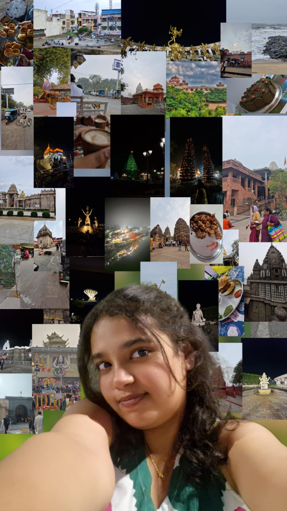

Explore 😉
As I explore the world around me, I'm constantly inspired by the intersection of technology and creativity.
When I'm not coding or learning about the latest industry trends, you can find me curled up with a good book or experimenting with new photography techniques.
I'm passionate about using my skills to make a positive impact, whether it's through developing innovative solutions or simply sharing my knowledge with others. One of my favorite quotes is 'The best way to predict the future is to invent it,' and I'm excited to see where my journey takes me.
Whether I'm trying new foods, traveling to new places, or simply taking a walk in nature, I'm always on the lookout for new experiences and inspiration.
I'm a firm believer that growth happens outside of our comfort zones, which is why I'm always looking for new challenges and opportunities to learn. Whether it's taking on a new project at work, attending a conference or workshop, or simply trying a new hobby, I'm excited to push myself and see what I'm capable of.
I'm also a big fan of collaboration and community-building, and I love connecting with others who share my passions and interests.
If I'm not in front of my computer, you can find me exploring new neighborhoods, trying new restaurants, or practicing yoga – I'm always on the lookout for ways to nourish my mind, body, and soul.